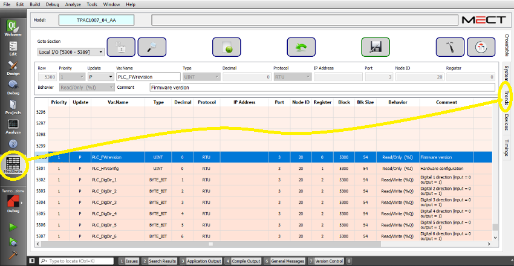
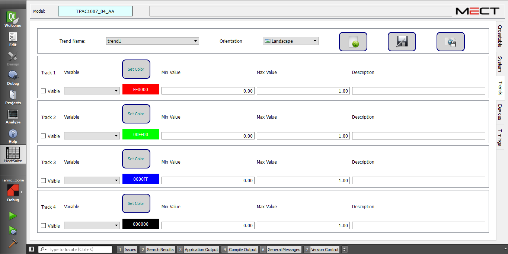

Mit dem “Trends Editor” können Sie die historisierten Variablen (Variablen, die die Parameter S, F, V und X im Feld “Update” des “Crosstable Editor” haben) konfigurieren, von denen Sie die Grafik als Funktion der Zeit erhalten möchten.
Im “Trend Editor” können Sie 4 Grafiken einrichten.
Um den “Trends Editor” zu starten, siehen Sie folgende Abbildung:

Die Schnittstelle ist wie folgt:

Sie können mehrere Trenddateien in einem Projekt haben.